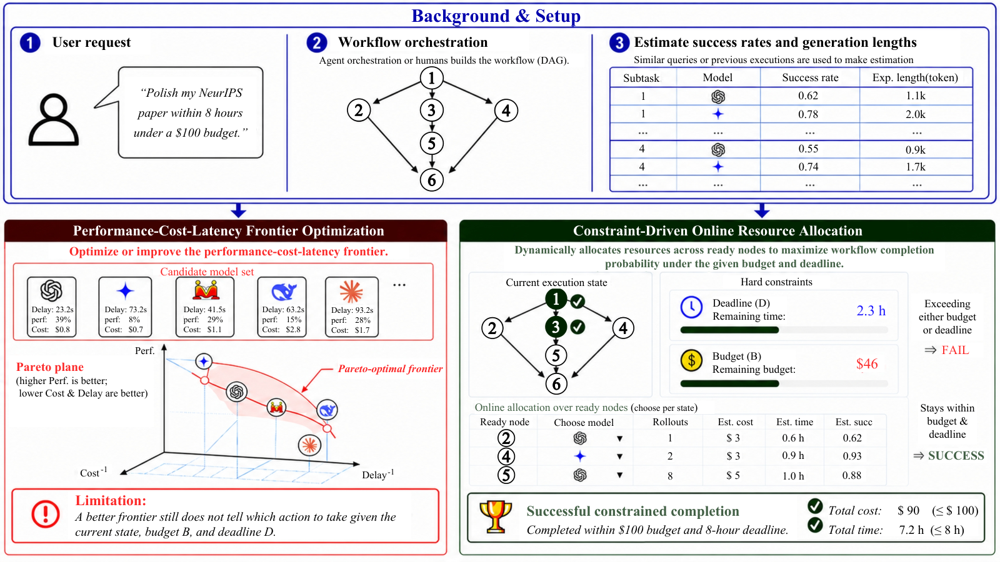

Uses the ProofFlow benchmark, where LLMs autoformalize proof steps into Lean 4 statements and proofs that Lean 4.15.0 checks.
Abstract
Agentic systems increasingly solve complex user requests by executing orchestrated workflows, where subtasks are assigned to specialized models or tools and coordinated according to their dependencies. While recent work improves agent efficiency by optimizing the performance–cost–latency frontier, real deployments often impose concrete requirements: a workflow must be completed within a specified budget and before a specified deadline. This shifts the goal from average efficiency optimization to maximizing the probability that the entire workflow completes successfully under explicit budget and deadline constraints. We study constraint-driven online resource allocation for agentic workflows. Given a dependency-structured workflow and estimates of success rates and generation lengths for each subtask–model pair, the executor dynamically allocates models and parallel samples across simultaneously executable subtasks while managing the remaining budget and time. We formulate this setting as a finite-horizon stochastic online allocation problem and propose Monte Carlo Portfolio Planning (MCPP), a lightweight closed-loop planner that directly estimates constrained completion probability through simulated workflow executions and replans after observed outcomes. Experiments on CodeFlow and ProofFlow demonstrate that MCPP consistently improves constrained completion probability over strong baselines across a wide range of budget–deadline constraints.
Problem
Agentic workflows decompose requests into dependent subtasks handled by different models. Deployments often require the whole workflow to finish within a fixed budget and deadline, rather than optimizing average performance–cost–latency trade-offs.
Approach
The setting is formulated as a finite-horizon stochastic online allocation problem over a DAG of subtasks. At each state the executor picks a model and a number of parallel samples for every currently executable subtask, using estimated success rates and generation lengths. Monte Carlo Portfolio Planning (MCPP) estimates the probability of completing within the constraints by simulating workflow executions, and replans after observed outcomes. Evaluation uses CodeFlow and ProofFlow; in ProofFlow, a formalizer translates proof steps into Lean 4 and a prover completes the proofs, which Lean 4.15.0 then verifies.

Figure 1: Comparison between performance–cost–latency frontier optimization and constraint-driven online resource allocation. A user request is first transformed into a static workflow, and success-rate and generation-length estimates for subtask–model pairs can be obtained from similar past queries or executions. Previous methods optimize or improve the performance–cost–latency frontier, but a be
Results
MCPP consistently improves constrained completion probability over Uniform and Retry baselines across a wide range of budget–deadline settings. It remains robust to noisy estimates of success rates and generation lengths. A safe-improvement analysis shows MCPP improves on the best base policy in its portfolio, up to estimation and sampling errors.